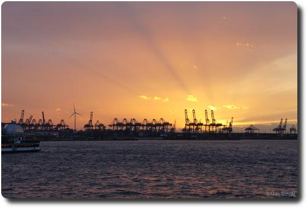
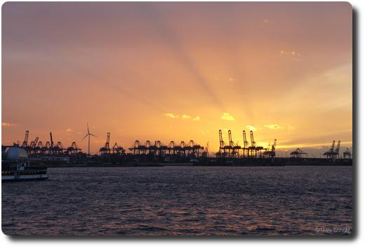

Schnappschuss vom Hamburger Hafen
Ein Schnappschuss vom Sonnenuntergang hinter dem Hamburger Hafen am 15.02.2014.
Wer mehr über unsere Reise nach Hamburg sehen und lesen will, kann das hier tun:
Ein Schnappschuss vom Sonnenuntergang hinter dem Hamburger Hafen am 15.02.2014.
Wer mehr über unsere Reise nach Hamburg sehen und lesen will, kann das hier tun: